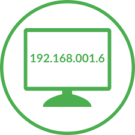
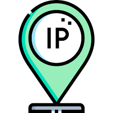

¿Qué es TCP/IP y cómo funciona?
Actualmente, TCP/IP es el estándar global para las comunicaciones en Internet.!
TCP/IP es un protocolo de enlace de datos que se usa en Internet para que los ordenadores y otros dispositivos envíen y reciban datos. TCP/IP son las siglas en inglés de Transmission Control Protocol/Internet Protocol (protocolo de control de transmisión/protocolo de Internet). Posibilita que los dispositivos conectados a Internet se comuniquen entre sí en varias redes.

¿Qué hace TCP/IP?
TCP/IP determina cómo los ordenadores transfieren datos de un dispositivo a otro. Estos datos deben ser exactos para que el receptor obtenga la misma información enviada por el emisor.
¿Qué es TCP/IP y cómo funciona? Para garantizar que cada comunicación llegue intacta al destino deseado, el modelo TCP/IP divide los datos en paquetes y luego los vuelve a juntar para formar el mensaje completo en el destino. Enviar los datos en paquetes pequeños hace que sea más fácil mantener la exactitud que enviando todos los datos a la vez.

¿Cómo funciona el modelo TCP/IP?
Cuando envía algo por Internet, ya sea un mensaje, una foto o un archivo, el modelo TCP/IP divide esos datos en paquetes según un procedimiento de cuatro capas. Los datos primero atraviesan estas capas en un sentido, y luego lo hacen en sentido contrario cuando los datos se vuelven a juntar en el destino. El modelo TCP/IP funciona porque todo el proceso está estandarizado. Sin la estandarización, la comunicación podría volverse impredecible y ralentizar las operaciones, y un Internet rápido depende de la eficiencia.
¿Qué diferencia hay entre TCP e IP?
TCP e IP son protocolos distintos para redes informáticas. La diferencia entre TCP (protocolo de control de transmisión) e IP (protocolo de Internet) es su papel en el proceso de transmisión de datos. IP obtiene la dirección a la que se envían los datos (su ordenador tiene una dirección IP). TCP garantiza la entrega correcta de los datos una vez hallada dicha dirección IP. En combinación, ambos forman el protocolo TCP/IP.
En otras palabras, IP clasifica el correo y TCP lo envía y recibe.
{kind=link}
{kind=link}
{kind=link}